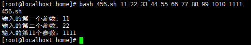

Missing Class In CS I_Vim_Bash
Missing Class 1 Shell&&Vim
shell的简单使用
我们现在就可以开始使用shell了，我们可以创建简单的变量
$ foo=bar
$ echo foo
bar 值得注意的是空格在这里就会显得关键，我们如果一不小心多打了空格，就会发现shell爆错误了：
我们可以使用$符号表示对变量名的解析。
$ echo "We can get the value of the foo that foo is $foo"
We can get the value of the foo that foo is bar 当然，我们的重点是去写简单的shell脚本
vim makeDir.sh
makeDir(){
mkdir -p "$1"
cd "$1"
} 现在，我们保存这个脚本，，然后
source makeDir.sh 现在，我们可以尝试一下，只打出make，一般而言会自动补全为makeDir
~$ makeDir test
~/test $tips:我们执行指令如果发现权限不够，可以用sudo，然后sudo !!，!!将会自动的替换成上一条指令，在我的Arch下它会提示将要执行的指令
shell里有一些含义特殊的参数，我来举个例子：
echo $? 可以看到我们执行这个的时候没有报错而是返回了0，0在计算机世界里可以认为是没有错误的意思。shell里有什么特殊的参数呢：
特殊参数的简介
$n
语法：
$n,含义：用于接收shell脚本文件执行时传入的参数。$0
#用于获取当前脚本文件名称$1~$9
#代表输入的第一个参数到第9个参数 # 这都不用括号（要也不影响）第10个以上就用数 字 比 如 {数字} 比如数字比如{12} # 后面这些都必须要{ }括号
简单示例编辑一个名为456.sh的shell脚本：
#!/bin/bash
echo $0
echo "输入的第一个参数：$1"
echo "输入的第二个参数：$2"
echo "输入的第11个参数：${11}"执行：bash 456.sh 11 22 33 44 55 66 77 88 99 1010 1111，获取的结果如下：

$
语法：
$#,含义：获取shell脚本所有输入参数的个数(输入2个就是2个)。- `echo “参数个数：$
全体目光向我看齐，我宣布个事！是我Charliechen写的这篇文章！(?)